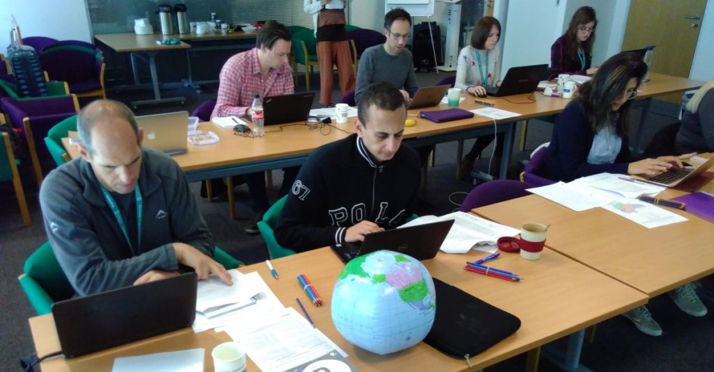

Spatial R – Time to move from sp to sf
It was about three years ago (2019) when I last wrote about the sp and sf libraries in R. The R Spatial world has moved on since then, with sp heading close to retirement now. Since 2019 I have run Introduction to Spatial Data & Using R as a GIS, and its companion course, Confident Spatial Analysis and Statistics in R & GeoDa, around 12 times teaching over 150 students. At some point I needed to make the transition from sp to sf – the question was, when?

Students at work, learning how to use R as a GIS A quick recap before we get into the details – there are two main libraries that allow us to handle spatial data in R – sp and sf. sp has been around for nearly 20 years now (it first came out in 2005) and is now entering retirement. sf is much newer – it initially came out in 2016, and ever since has been gaining new functions and new users.
sp and sf work in fundamentally different ways, specifically revolving around how they store spatial data within R. sp uses something called S4 classes, where the different elements of spatial data (coordinates/geometry, attribute table, coordinate system, etc.) are split up into different ‘slots’ and accessed using the @ symbol. sf uses S3 classes and stores spatial data all within a standard data frame, with some extra header information and a geometry column.
The practical upshot of all of this is that I have to choose which one to teach in my courses. Pre 2019, I taught everything in sp because that was the most well used library. In March 2019 (three years ago) I moved the first part of my course from sp to sf and introduced the tmap library. This actually made R much easier to teach – because it was quicker and easier to create a map, primarily as a result of the great tmap library and the simplicity that using sf brought.
At this point sf was still developing, and I struggled to be able to do a point-in-polygon analysis in sf – see my previous blog post for more details! Additionally, there were still many many examples of sp code on the web, and relatively few sf examples. Therefore I decided to keep my more advanced practical 3: point in polygon analysis in sp.
By the time we got to Dec 2021 (last year) sf had come along way since 2019, and point in polygon analysis was now possible – so I updated my practical to reflect this. I’ve still kept the sp example, and in the introductory course I still mention sp in passing as I think it is important for any R spatial users to be aware of sp, even if they don’t actually use it. This is because I think for at least the next couple of years, there will be lots of sp examples still on Stack Exchange and elsewhere on the web, and when people find these examples, they need to be able to understand what they are any why they are different.
Moving forward from now (2022) most of the packages that support sp (rgdal, rgeos, maptools) are being retired from the end of 2023, and everyone is being advised to move to sf. sp itself is still getting some maintenance updates, but this will only be for a limited period of time, and now everyone should be moving from sp to sf for new work. In addition, if you work with raster data, the raster library (which has many of the same dependents as sp) is transitioning to terra.
The We Are R Ladies group on Twitter did a very good Twitter thread about these changes – do check it out at https://twitter.com/WeAreRLadies/status/1469286521874300939.
My introductory course is now fully transitioned to sf, and the practical is available under a Creative Commons Attribution-NonCommercial-ShareAlike 4.0 International license at https://github.com/nickbearman/intro-r-spatial-analysis. I will next be running this course as part of the GeoIgnite conference in Canada, on 9th March. I will also be running this course again the future, please sign up to my mailing list to find out when I have confirmed more dates.
Next on the list is updating the Advanced course, Confident Spatial Analysis and Statistics in R & GeoDa and moving this from sp to sf, which is going to be quite a job. A summer project, perhaps….!